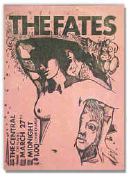
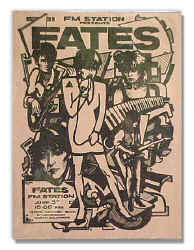
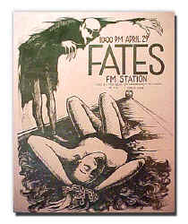
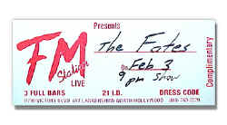

<!DOCTYPE HTML PUBLIC "-//W3C//DTD HTML 4.01 Transitional//EN"        "http://www.w3.org/TR/html4/loose.dtd">
<html lang="en">

<head>
<title>Shannon Johnson:&nbsp; The Fates - Henderson State University</title>
<meta http-equiv="Content-Language" content="en-us">
<meta http-equiv="Content-Type" content="text/html; charset=windows-1252">
<meta name="GENERATOR" content="Microsoft FrontPage 5.0">
<meta name="ProgId" content="FrontPage.Editor.Document">
<meta name="copyright" content="Copyright © 2002 Henderson State University">
<meta name="rating" content="General">
</head>

<body background="images/ARlogoborderBROWN.jpg" link="#663300" vlink="#663300" alink="#663300" bgcolor="#FFFFFF">

<div align="right">
  <table border="0" width="85%">
    <tr>
      <td width="71%" valign="top" align="left">
        <blockquote>
          <h1><b><font color="#663300"><span style="mso-bidi-font-size: 12.0pt"><font size="5" face="Arial">Shannon
          Johnson</font></span></font><span style="font-size:18.0pt;mso-bidi-font-size:12.0pt"><o:p><font color="#6F0000" face="Arial">
          </font>
          </o:p>
          </span></b></h1>
        </blockquote>
        <p class="MsoNormal" align="left"><font size="4"><b>The Fate of the Fates:
        a Hollywood Memoir</b></font></p>
        <p class="MsoNormal" align="left"><b><font size="5">O</font><span style="font-size:12.0pt">ur
        </span></b><span style="font-size:12.0pt">
        <b>
        first gig never happened. </b> It was supposed to take place at an
        underground club called The Galaxy, the cops busted the joint the night
        before our gig while some band called L.A. Guns or Guns and Roses was
        playing. That meant our drummer and I had to hit the clubs again
        peddling our lousy little tape. <o:p>
        </o:p>
        </span></p>
        <p class="MsoNormal"><span style="font-size:12.0pt"><span style="mso-tab-count:
1">&nbsp;</span>“You’re an all-girl band; that’s novel,” the sleazy club
        promoter said, adding, “We can<o:p>
        </o:p>
        probably give you a try.” The
        Go-Gos were back from “Vacation” and the Bangles would soon “Walk
        Like an Egyptian.” An all-girl band was uncommon, but not all that
        novel any more.<o:p>
        </o:p>
        </span> </p>
        <p class="MsoNormal"><span style="font-size:12.0pt">“We write our own
        songs and play our own instruments,” we assured the guy, although some
        of us had been musicians for only a few weeks. I was desperate to become
        famous; I would have signed us up to play a hoochy-koochy bar just to
        get started. We had been sure the punky, avant-garde Anti Club would
        call us. They never did.<o:p>
        </o:p>
        </span></p>
        <p class="MsoNormal"><span style="font-size:12.0pt">Our real first gig
        was at the FM Station which was a fairly big and reputable place to gig in
        North Hollywood. Our guitar player and self&#8209;proclaimed white witch
        was away in Boston when our premier came around. Her feelings were hurt,
        but, you know, the show must go on because there are thousands of bands
        playing at any one time in Los Angeles. And you’ve got to promote
        yourself. Flyers, free passes, photos—all self promotion. You don’t
        make any money trying to become famous, but we figured we could hold out
        the couple of years it would take to get there.<o:p>
        </o:p>
        </span></p>
        <p class="MsoNormal"><span style="font-size:12.0pt">We were billed as an
        all-girl band. However, for the Fates’ premier a guitar player with
        Velvet Buzzsaw, stood in for our guitar player. He was just uninhibited
        enough to have fun. The rest of us were petrified bunnies with stiff
        bitch facades. Later we would really become precious.<o:p>
        </o:p>
        </span></p>
        <p class="MsoNormal"><span style="font-size:12.0pt">Fortunately, that
        show went well, unlike the gig where I suddenly heard myself playing a
        tear-jerking ballad out of tune. That was also the fateful night when
        our keyboard player’s instrument became a Ouija board conjuring the
        demon spirits of the tone deaf as its sequencer moaned an arpeggio that
        sounded like Lucifer talking backwards on a Zepplin album. We went on at
        2 a.m., and our groupies were locked out. These earth children never
        carried IDs so they protested by rioting for The Fates outside the club.
        Unfortunately,<span style="mso-spacerun: yes">&nbsp; </span>there were
        five whole customers inside the place, so the sound man unplugged us
        long before MTV unplugged Clapton or Nirvana. <o:p>
        </o:p>
        </span></p>
        <p class="MsoNormal"><span style="font-size:12.0pt"><span style="mso-tab-count:
1">&nbsp;</span>“Hey, man, we’re not finished with our set.” <i>Did he not
        know who we were . . . destined to be?</i><o:p>
        </o:p>
        </span></p>
        <p class="MsoNormal"><span style="font-size:12.0pt">“You’re finished
        alright,” said hairy Goliath.<o:p>
        </o:p>
        </span></p>
        <p class="MsoNormal"><span style="font-size:12.0pt">Anytime we had a
        gig, anxiety would drain the blood from my fingers and make me shiver,
        sometimes uncontrollably. Even a run of scales and my best white girl
        attempt at slap and pop didn’t bring warmth to my digits. I made
        mental notes to wear fingerless gloves, to soak my hands in hot water
        before going on, or to get drunk. But it was sort of a silent agreement
        that we would not drink or do drugs when we were gigging. Our drummer
        was a recovering alcoholic; our keyboard player was a druggy; our guitar
        player was a very small-time dealer; our singer, while drug free, was a
        self-deluded <i>prima donna </i>covering up low self-esteem; and I, the
        so-called leader of the band, was naive yet cynical and gutless. <o:p>
        </o:p>
        </span></p>
        <p class="MsoNormal"><span style="font-size:12.0pt"><span style="mso-tab-count:
1">&nbsp;</span>As the leader, I did work to get us gigs. Why, I nearly
        convinced the girls of the importance of rehearsal time. I even
        purchased some of our instruments with my own fast depleting savings.
        Oh, it was such a struggle, constantly. The ones who needed it most
        thought they were above rehearsal. The most creative one was too screwed
        up for two-way communication. <o:p>
        </o:p>
        </span></p>
        <p class="MsoNormal"><span style="font-size:12.0pt">Our second gig was
        worth something. The white witch was back from Boston. It was a
        “battle of the bands” at The Central. I don’t remember where we
        were slotted, but by the time we went on, I’d seen a few of the bands
        and they could actually play their instruments ... but we were all
        girls, novel. Maybe that’s why we took second place. I like to think
        it was because we were real contenders.<o:p>
        </o:p>
        </span></p>
        <p class="MsoNormal"><span style="font-size:12.0pt"><span style="mso-tab-count:
1">&nbsp;</span>I took several odd jobs to support myself on my quest for
        stardom. I cleaned an eye doctor’s office on the weekends. He had me
        clean his office on Saturday and then again on Sunday. He was a sweet,
        old, Jewish man. His secretary, who told me she had attended high school
        with Jane Russell—cross my heart, and her daughter came to some of our
        shows. A lot of our straight-laced friends were very supportive. An old
        black man dressed to the nines, who had just a smidgen of senility,
        would come to see me play. He brought me presents: an umbrella, a cake,
        a bottle of wine. I served him everyday at the deli where I worked.<o:p>
        </o:p>
        </span></p>
        <p class="MsoNormal"><span style="font-size:12.0pt">Zipi Deli was a
        block away from Capitol Records. The New York-style deli was owned and
        run by Su and May, a young Korean couple. They had three kids, and they
        were my family away from home. I was their punky, often moody, damned
        hard-working American girl from Awkansass. “Leenda, you my besta
        friend. I love you,” Su would tell me. <i>Linda?</i> Su had an
        endearing sense of humor, and he disliked New Coke so much that he
        switched his fountain over to “Pepchi.” <o:p>
        </o:p>
        </span></p>
        <p class="MsoNormal"><span style="font-size:12.0pt">May and Su made sure
        I ate every day, and, at least once a week, they invited me to their
        house for supper. Korean food is good ...once you get used to it, except
        for that soup. It looked like it had been scooped right out of the ocean
        and heated up. Those tentacles, eyes, bones, shells, suckers were fiery
        hot. I would rather stick pins in my eyes than be rude to nice people,
        but I had a hard time with that soup. “Leenda, you don’t likey
        this&#8209;a Korean soup?” <o:p>
        </o:p>
        </span></p>
        <p class="MsoNormal"><span style="font-size:12.0pt">Quickly, I made
        something up about being allergic to eyeballs.<o:p>
        </o:p>
        </span></p>
        <p class="MsoNormal"><span style="font-size:12.0pt">Another time:
        “Leenda, you too quiet. You don’t likey this&#8209;a Korean food?”
        They truly were concerned about my welfare and were always telling me
        “you need-a eat more; you need more rest.”<o:p>
        </o:p>
        </span></p>
        <p class="MsoNormal"><span style="font-size:12.0pt">“I love this
        food!” I said, with much conviction. Indeed, I had truly acquired a
        taste for sushi, kimpop, kimchi, everything but the soup.<o:p>
        </o:p>
        </span></p>
        <p class="MsoNormal"><span style="font-size:12.0pt">“You makey
        noise.”<o:p>
        </o:p>
        </span></p>
        <p class="MsoNormal"><span style="font-size:12.0pt"><span style="mso-tab-count:
1">&nbsp;</span>“What?”<o:p>
        </o:p>
        </span></p>
        <p class="MsoNormal" style="margin-left" align="left"><span style="font-size:12.0pt"><span style="mso-spacerun: yes">&nbsp;</span>“You
        likey food, you makey noise.” Su was explaining something very culturally</span>
        <span style="font-size:12.0pt">important
        and I wasn’t getting it. “In Korean it good etchiquette, you makey
        noise.” <o:p>
        </o:p>
        </span></p>
        <p class="MsoNormal"><span style="font-size:12.0pt">Ahh... I had
        wondered at the cacophony of smacking the five of them were making. I
        never was<o:p>
        able to make myself
        eat with my mouth open in front of them, though I reassured May that<o:p>
        </o:p>
        </span></p>
        <o:p>
        <p class="MsoNormal"><span style="font-size:12.0pt">Korean food was one
        of my favorite cultural cuisines. And it is. <o:p>
        </o:p>
        </span></p>
        <p class="MsoNormal"><span style="font-size:12.0pt">I
        realize now that I also erred in not removing my shoes upon entering
        their house, which, to this day, I deeply regret. At the time I’m sure
        it was all about the unknown condition of my sweaty feet in cheap shoes.<o:p>
        </o:p>
        </span></p>
        <p class="MsoNormal"><span style="font-size:12.0pt">They
        overlooked my ugly American blunders and were going to put a sink and a
        toilet in their garage and move me in. I was sharing an efficiency
        apartment with two band mates, their sisters, other people, various
        street people, and a couple of cats. No wonder the Koreans worried about
        me.<o:p>
        </o:p>
        </span></p>
        <p class="MsoNormal"><span style="font-size:12.0pt">I
        haven’t mentioned the Thanksgiving I spent with three street boys
        while my two main roommates left to save a friend from suicide? Well,
        they saved the guy, but he succeeded in his endeavor the next year
        around Christmas time.<o:p>
        </o:p>
        </span></p>
        <p class="MsoNormal"><span style="font-size:12.0pt">Starting
        out, the Fates<span style="mso-spacerun: yes">&nbsp; </span>went on
        really late or too early. That’s what you do when you’re unknown.
        You don’t get prime time until you’ve attained a following. We had
        about five fans. Well, one time we had more–60. And that’s how many
        dollars we got–a dollar a head. Truthfully, the Fates did actually
        start gaining in popularity and in talent when it all ended. The thing
        is our keyboard player, who probably had the most potential, was a brick
        wall. Hindsight and Psychology 101 tell me she was bi-polar, and she
        liked to take the wrong kind of medication and then sleep for a couple
        of days. <i>I know we could’ve been contenders.</i><o:p>
        </o:p>
        </span></p>
        <p class="MsoNormal"><span style="font-size:12.0pt">The
        Fates headlined a time or two. We could feel it when we clicked. Like
        hounds hot on <o:p>a trail, we could
        smell vinyl being cut, but we weren’t hounds, we were more like
        Pomeranians. We were starting to feel precious. Preciousness<span style="mso-spacerun: yes">&nbsp;
        </span>is a feeling of arrogance one believes is appropriate because one
        is in a place where people want a piece of the celebrity one believes
        one has become, and after one sizes up these cling-ons one surmises that
        most of them don’t deserve to breathe the same air one does, so one
        thinks to oneself (or says out loud if one is really precious): “I’m
        too precious, fuck off.”<o:p>
        </o:p>
        </span></p>
        <o:p>
        <p class="MsoNormal"><span style="font-size:12.0pt">Our
        drummer resembled a cross between Rik Ocasek and Patty Smith. We were
        sort of callous toward her. At 30, she was really old we thought; she
        was thin; she was masculine; she had a bad attitude sometimes. But she
        had a fondness for me ... for awhile. But the world was often against
        her. <o:p>
        </o:p>
        </span></p>
        <p class="MsoNormal"><span style="font-size:12.0pt">We
        were headlining at Filthy McNasty’s when some older foreign dude
        bought champagne for the band. We humored him a bit, but mostly we blew
        him off. We schmoozed from table to table. Bono supposedly was there.
        Mario Van Peebles was dating our singer, so he was there. <i>Yes, I’m
        name dropping.</i> Johnny Colla, of Huey Lewis and the News, was sweet
        on our keyboard player, but he wasn’t her type. Lucky for him. <o:p>
        </o:p>
        </span></p>
        <p class="MsoNormal"><span style="font-size:12.0pt">Johnny
        became a friend and tutor of the band’s until a couple of the most
        precious told<o:p>
        him to fuck off. Who
        needs a Grammy award winning songwriter’s advice anyway? <i>The stupid<o:p>
        </i>
        </span><o:p><i><span style="font-size:12.0pt">bitches</span></i><span style="font-size:12.0pt">.
        They also told the Bangles’ manager, “don’t call us, we’ll call
        you.”<i> What the hell were they thinking?</i> They also loved picking
        fights with the sound men right before a show. <i>Hello ...?</i><o:p>
        </o:p>
        </span></p>
        <p class="MsoNormal"><span style="font-size:12.0pt">Mario
        was impressed with my bass playing, I guess. He came to the apartment
        and asked<o:p>
        if I’d help write
        a song for a movie he was doing with Clint Eastwood—<i>Heartbreak
        Ridge</i>. I never had much confidence in my bass playing, but I figured
        this was one of those rare opportunities. So, I went to our singer’s
        apartment to work with Mario. He was cute and sweet. He had already
        recorded a basic bass line. Idiot me told him what he already had was
        just peachy dandy. <i>Blown opportunity; what an idiot.</i><o:p>
        </o:p>
        </span></p>
        <o:p>
        <p class="MsoNormal"><span style="font-size:12.0pt">Oh,
        back to that gig where the guy bought us champagne, he also gave us all
        roses after<o:p>
        our encore. All of
        us except our drummer. She stormed out, took her drums, loaded them into
        the<span style="mso-spacerun: yes">&nbsp; </span>old, primered Nova, and
        left us stranded. We asked the guy why he’d do such a mean thing. He
        was very apologetic. “I thought she was a guy,” he said in a sort of
        sexy Arab accent. Later, during one of our after-the-gig meetings, we
        told the drummer she had just better start dressing more feminine.<o:p>
        </o:p>
        </span></p>
        <o:p>
        <p class="MsoNormal"><span style="font-size:12.0pt">We
        all worked at this novelty shop on Hollywood Boulevard and one day<span style="mso-spacerun: yes">&nbsp;
        </span>the owner asked us to play a party he was giving. I’m
        backtracking a bit. This was one of our very early gigs–when the only
        song in our repertoire was “Our Lips are Sealed” by the Go Gos. We
        were embarrassingly bad. I mean we might as well have been tap dancing
        because we couldn’t<o:p>
        do that either. This
        is the first time the Bangles’ manager was blown off by the precious
        girls. <i>He could have molded us ...</i> Somebody connected with
        Fleetwood Mac was supposedly there as well. <i>All these opportunities.</i><span style="mso-spacerun: yes">&nbsp;&nbsp;
        </span><o:p>
        </o:p>
        </span></p>
        <o:p>
        <p class="MsoNormal"><span style="font-size:12.0pt">I
        remember thinking, “these Hollywood Hills party people are spoiled,
        rich, and air-headed.” Their noggins were nowhere near earth that
        night. I was very uncomfortable. The band<o:p>
        was like a
        two-year-old unleashed on a toy drum set—we were so bad,
        though I don’t think<o:p>
        anyone noticed but
        me. I went inside to use the restroom and found out why everyone was
        smiling despite our making a discordant noise pool side: piles of white
        powder on the coffee table. <i>That’s Hollywood.</i><o:p>
        </o:p>
        </span></p>
        <o:p>
        <p class="MsoNormal"><span style="font-size:12.0pt">We
        knew most of our fans intimately. Our one and only roadie, Mr. Wild,
        became like<o:p>
        a brother to me on
        one sun-baked, cervesa-soused ride home from Mexico in the
        back of a pick-up. He smelled like my dad that day. I met Todd at
        an ice cream parlor. We both had the<o:p>
        fashionable
        “tail” haircut. He was working at Bonnie &amp; Clyde’s, and I was
        applying for a job. He<o:p>
        was living on the
        streets, so I introduced him to the band and he became part of the
        family. He partnered up with the singer, pre-Mario.<o:p>
        </o:p>
        </span></p>
        <o:p><o:p>
        <p class="MsoNormal"><span style="font-size:12.0pt">Velvet
        Buzzsaw members also were avid fans of ours. Their lead singer took a
        liking to<o:p>
        me. He broke it off
        with his fiancé, bought me dresses, a leather motorcycle jacket, and a
        ‘69<o:p>
        Peugeot. He wanted
        to make me over ala Siouxie Sioux. He was a great guy, and we worked on
        music together and became good friends. <o:p>
        </o:p>
        </span></p>
        <o:p>
        <p class="MsoNormal"><span style="font-size:12.0pt">After
        our keyboard player really talked us up, Poison’s drummer, Rikki,
        asked us to go on a little tour with his band. By now we had more than
        one song on our set list, but we were not ready for a tour. An
        all-girl band opening for a glam band would have been marketable.
        But oh, well; we were not ready and I hate to be incompetent.<o:p>
        </o:p>
        </span></p>
        <p class="MsoNormal"><span style="font-size:12.0pt">Working
        at the deli, I met the girl who would do our flyers. She worked a few
        doors<o:p>
        down at a trendy
        clothing shop. One night, I invited her to go with me to watch a
        particular band play. We went to the Club Lingerie. She got drunk, and I
        got a little blotto on banana daiquiris. But I was not too numb to be
        terrifically embarrassed when she began sucking on my neck right there
        at the bar. She said she’d been with at least 100 people, guys and
        girls. <i>This doesn’t turn me on.</i> She said she had gotten down on
        her knees for her chiropractor boyfriend in front of his<o:p>
        buddies, but her
        latest affair had been with a Russian girl. The girl was femme, and they
        played<o:p>
        at S&amp;M games. I
        got the feeling the Russian girl was not so willing a participant. <o:p>
        </o:p>
        </span></p>
        <o:p><o:p>
        <p class="MsoNormal"><span style="font-size:12.0pt">The
        artist obsessed over the keyboard player. The keyboard player knew how
        to play mind games and relished torturing the artist, as she did me and
        whomever else would let her. The artist turned to drugs, and I think her
        mother pulled her out of Hollywood.<o:p>
        </o:p>
        </span></p>
        <p class="MsoNormal"><span style="font-size:12.0pt">We
        hired film and photography students to take pictures of us for
        publicity. And our photo appeared<span style="mso-spacerun: yes">&nbsp; </span>in
        the <i>LA Weekly</i> a couple of times. The keyboard player befriended
        an amateur videographer. <i>Have I mentioned Dwight Yokum?</i> Anyway,
        this videographer filmed a couple of our early rehearsals. We all
        dressed up for it. I looked like a Thompson Twin; the keyboard player
        looked like Howard Jones; the drummer looked like, well, I already
        described her; the singer looked a little<span style="mso-spacerun: yes">&nbsp;
        </span>like Jamie Lee Curtis all in black; and our guitar player–the
        one before the white witch—looked embarrassed. She quit before we ever
        played out. <i>I wonder if she ever got to be a contender?</i><o:p>
        </o:p>
        </span></p>
        <p class="MsoNormal"><span style="font-size:12.0pt">Videographer
        Bob taped us headlining at FM Station. The video begins with our music<o:p>
        playing over a shot
        of FATES on the marquee. As our music plays, the camera glares off of<o:p>
        a street light, then
        pans down to a shiny convertible with white leather seats. There’s a
        bushy-headed woman in tight leopard skin clothing slinking around
        the interior. That’s Mrs. Videographer. They were great people, very
        ‘80s, fantasy, wizards, crystals kind of people. The tape is fun, a
        memento.<o:p>
        </o:p>
        </span></p>
        <o:p>
        <p class="MsoNormal"><span style="font-size:12.0pt">The
        guy who played our first gig with us, guitarist for Velvet Buzzsaw, also<o:p>
        worked at Capitol
        Records. He was an engineer, and so we got to go in and record. But,
        wait,<o:p>
        here’s some angst
        I left out: The drummer quit because I couldn’t make the keyboard
        player and the singer behave. We had really been riding her about her
        timing anyway. We got a new drummer, a large Hispanic girl. She was
        really pretty good. As a bass player, I really enjoyed playing with her.
        So, I fired her. I didn’t know how to fix the band so I, at the
        urgence of other members, began firing people. I fired the guitar player
        and blamed everything on her. By now the keyboard player was getting
        harder to handle. Tensions were taut. I saw no way out except to destroy
        the band. <i>I didn’t know I was destroying the band. This hindsight
        is fourteen years in the making.</i><o:p>
        </o:p>
        </span></p>
        <o:p>
        <p class="MsoNormal"><span style="font-size:12.0pt">So,
        now we’re at Capitol Records with a guy sitting in on guitar, the
        original singer, the original keyboard player, me, and a drum machine.
        We were laying down tracks over the course of a couple of days when the
        singer and the keyboard player got into it...again. The singer pulled
        her, “I quit” routine. I said, “I quit too.” She laughed. The
        keyboard player told me her<o:p>
        side. She quit too.
        “Me too,” I said. She laughed. “...You’re serious?” “I’m
        serious.” Phone call.<o:p>
        </o:p>
        </span></p>
        <o:p>
        <p class="MsoNormal"><span style="font-size:12.0pt">Phone call. Phone
        call. Some people called to tell me I was making a big mistake by
        quitting<o:p>
        music. Blah. Blah.
        Blah. I’d had enough self-destructive behavior in MY band. The magic
        one feels, I suppose, when one has hit upon one’s calling was gone. I
        thought that’s what music, what being in a band was for me–the thing
        I wanted more than anything, but it went away—a cold shower rained
        down on my passion.<o:p>
        </o:p>
        </span></p>
        <o:p>
        <p class="MsoNormal"><span style="font-size:12.0pt">I
        have never thrown myself so deeply into something as I did with my quest
        for fame<o:p>
        through music. I was
        naive and naiveté is good for going against stiff odds. Absolutely, I
        was doing it for the wrong reason. But I did enjoy playing; it was
        euphoric when we all came together. I have not contemplated starting
        another band since I walked away from my dream, but I keep my bass
        nearby, just in case.<o:p>
        </o:p>
        </o:p>
        </span></p>
        <p class="MsoNormal" style="mso-layout-grid-align:none;text-autospace:none" align="right">&nbsp;</td>
      <td width="29%" valign="top" align="left" bgcolor="#000000">
        &nbsp;
        <p>&nbsp;</p>
        <p align="center"><a href="images/fatescentral.jpg">
        </a><p align="left">&nbsp;<p align="left">&nbsp;<p align="left">&nbsp;<p align="left">&nbsp;<p align="left">&nbsp;<p align="left">&nbsp;<p align="left">&nbsp;<p align="left">&nbsp;<p align="left">&nbsp;<p align="left">&nbsp;<p align="center"><a href="images/fatesband.jpg">
        </a><p align="left">&nbsp;<p align="left">&nbsp;<p align="left">&nbsp;<p align="left">&nbsp;<p align="left">&nbsp;<p align="left">&nbsp;<p align="left">&nbsp;<p align="left">&nbsp;<p align="left">&nbsp;<p align="center"><a href="images/fatesRR.jpg">
        </a><p align="left">&nbsp;<p align="left">&nbsp;<p align="left">&nbsp;<p align="left">&nbsp;<p align="left">&nbsp;<p align="left">&nbsp;<p align="left">&nbsp;<p align="left">&nbsp;<p align="left">&nbsp;<p align="center"><a href="images/ticket.jpg">
        </a></td>
    </tr>
  </table>
</div>

<p align="center"><a title="Select to go to the Home Page" href="2001.html">HOME</a></p>

</body>

</html>